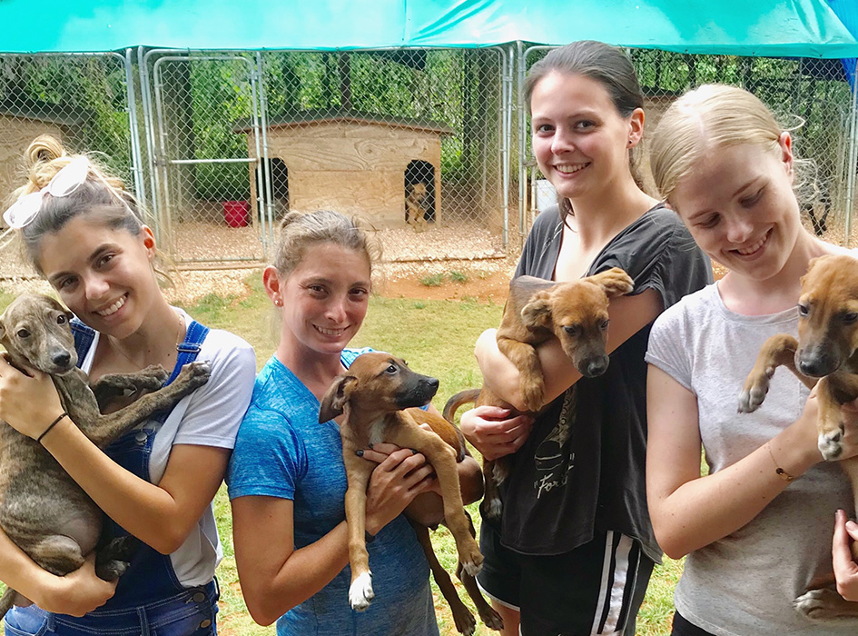
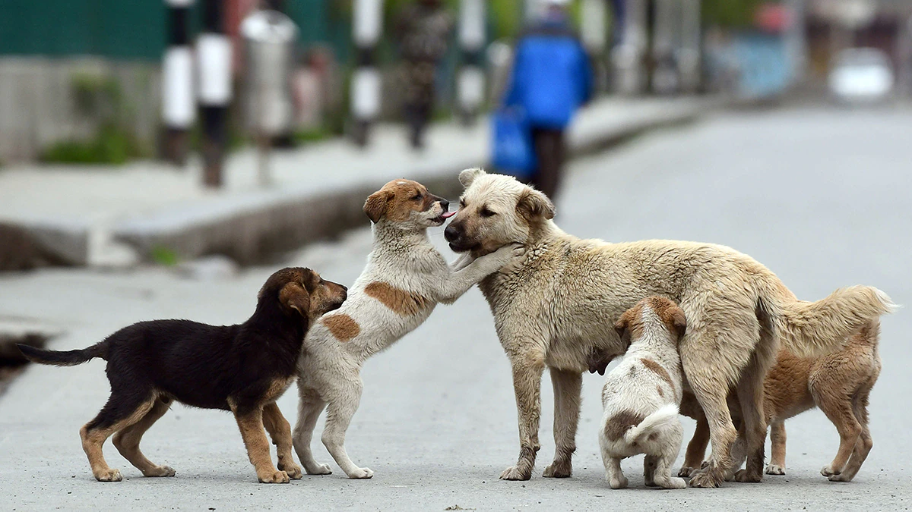

How you can help us as a volunteer
Volunteers play a vital role in supporting local animal welfare organizations with pet adoption and feeding sessions. Volunteers can help by fostering animals awaiting adoption, providing transportation, or assisting with adoption events. In feeding sessions, volunteers can assist with food and water distribution, monitoring the animals' behavior, and identifying animals in need of medical attention or adoption. Additionally, volunteers can help with fundraising, outreach, and education initiatives to promote responsible pet ownership and support the organization's mission.
JOIN WITH USHow your donations help us
Donations can help cover the costs of food, supplies, and medical care for animals in need, as well as support outreach and education initiatives to promote responsible pet ownership. Donations can also help organizations provide emergency assistance to animals affected by natural disasters or other crises. By donating to a local animal welfare organization, individuals can help improve the well-being of stray animals and support efforts to find them permanent homes.
DONATE US